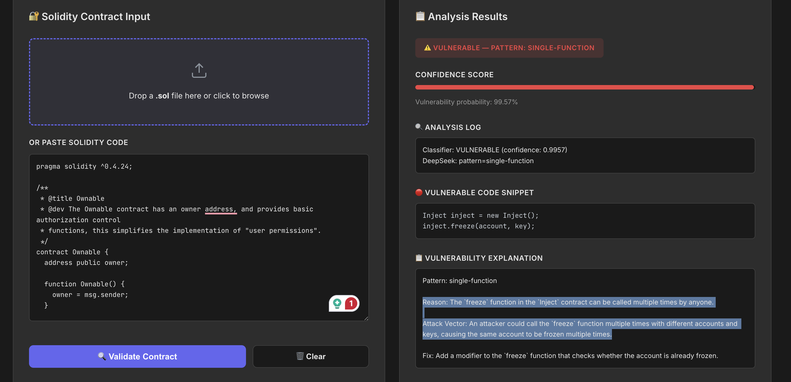
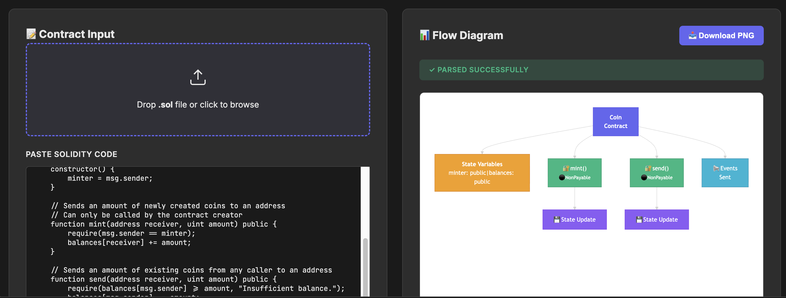

Project: Enhanced Detection of Reentrancy Vulnerabilities in Smart Contracts Using Integrated AI Approaches
- Author: Ashween Ramakrishnan (A1866320)
- Supervisors: Dr. Ningran Li, Dr. Olaf Maennel
- Core Tech: Python, Solidity, PyTorch, Transformers (CodeBERT, CodeLlama, DeepSeek), Scikit-Learn, LoRA, Docker, Ansible
- Project Type: Master's Research Thesis (Semester 1 & Semester 2)
Reentrancy attacks remain the most severe security risk to smart contract ecosystems, causing substantial financial losses exceeding hundreds of millions of dollars in decentralized finance (DeFi) networks. Reentrancy occurs when a contract allows an external call prior to updating its internal state, enabling attackers to repeatedly withdraw funds or manipulate execution logic recursively.
This research develops an integrated vulnerability detection architecture transition from traditional ensemble machine learning models to fine-tuned Large Language Models (LLMs) and containerized deployment platforms.
Platform Integration: This vulnerability detection tool has been successfully deployed and integrated into the CyberLab cybersecurity research platform at the Adelaide University.
Phase 1: Research & Classical ML Baselines
In Phase 1, a consolidated dataset of smart contract source codes was engineered. Simple structural features (e.g., line count, function count) and semantic token frequencies via TF-IDF were extracted.
- Data Engineering: Addressed data leakage by stripping raw vulnerability-defining counters (e.g., direct call patterns). Managed class imbalances using SMOTE and 5-fold cross-validation.
- Baseline Model (Random Forest): Achieved high recall (82%) on vulnerable contracts, but suffered from low precision (49%), confirming that classical syntactic/lexical ML methods create high false-positive rates.
- Transformer Validation: A CodeBERT baseline exhibited similar low-precision trade-offs (Precision: 49.5%, Recall: 65.5%), validating the need for semantic, context-aware LLMs.
Phase 2: Prompt Engineering, Knowledge Banks & Fine-Tuned LLM Classifier
Phase 2 explored advanced LLM architectures to eliminate false positives and supply semantic reasoning capabilities:
- Prompt-Engineered LLM Loop: Evaluated multi-tier difficulty prompting without retraining. Demonstrated potential for code reasoning but lacked consistency.
- Knowledge Bank Augmentation: Supplied explicit reentrancy signatures (e.g., withdraw-before-state-update patterns) into the prompt context. Improved performance slightly but proved insufficient as a sole detection engine.
- LLM Classifier Architecture: Shifted from conversational/instruct models to a direct binary LLM classifier (Base Model + 2-Neuron Classification Head) using Low-Rank Adaptation (LoRA) fine-tuning.
Random Forest Baseline (Phase 1)
- Accuracy: 70.25%
- F1-Score: 71.69%
- Vulnerable Precision: 49.0%
- Vulnerable Recall: 82.0%
Fine-Tuned LLM Classifier (Phase 2)
- Accuracy: 91.60%
- F1-Score: 91.50%
- Precision (Weighted): 91.67%
- Recall (Weighted): 91.60%
CyberLab Interface & Visualization Showcase
The integrated tool provides security auditors and developers with a dual-interface pipeline for contract scanning and structural visualization:

Figure 1: Smart Contract Detector UI displaying confidence scores, highlighted vulnerable snippets, and AI-generated explanations.

Figure 2: Smart Contract Visualizer UI mapping AST control flows, state variables, and execution paths in a flow diagram.
CyberLab Platform Integration & Smart Contract Visualizer
To transition the project from a research prototype to an enterprise-ready security tool, the engine was integrated into the CyberLab Platform (Kubernetes/Docker):
- Automated Deployment: Automated environment configuration, NVIDIA driver handling, and service spinning using Ansible Playbooks.
- Dynamic S3 Adapter Loading: Model adapters and tokenizers are dynamically fetched at container startup from AWS S3 buckets.
- Smart Contract Visualizer: Added a rule-based AST/Solidity parsing layer that visualizes control flows, state changes, and sensitive external calls alongside detection reports.
System Architecture & UI Pipeline
| Pipeline Stage | Action | Output / Role |
|---|---|---|
| Stage 1: User Upload | User uploads Solidity source code via CyberLab Web Interface. | Raw .sol file ingest. |
| Stage 2: Model Scanning | Model Loader queries S3 adapters and executes GPU inference via 2-neuron LLM classifier head. | SAFE / VULNERABLE decision. |
| Stage 3: Code Localization & Flow | Visualizer parses control flow graphs (CFGs) and highlights exact lines of vulnerable external calls. | Interactive execution path diagram. |
| Stage 4: LLM Explanation | DeepSeek/CodeLlama generates natural language explanation of the security risk. | Auditor-ready remediation report. |